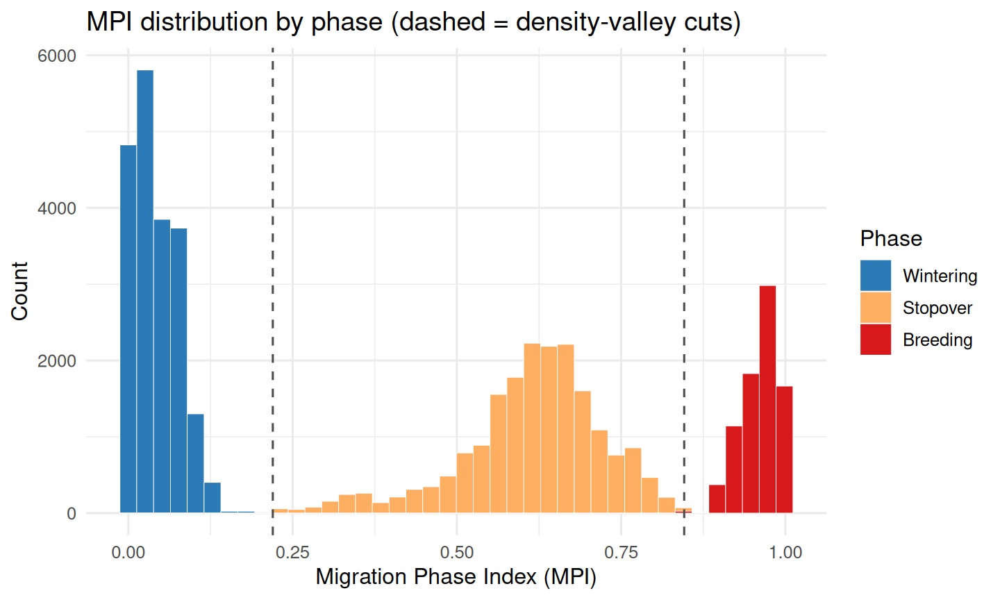
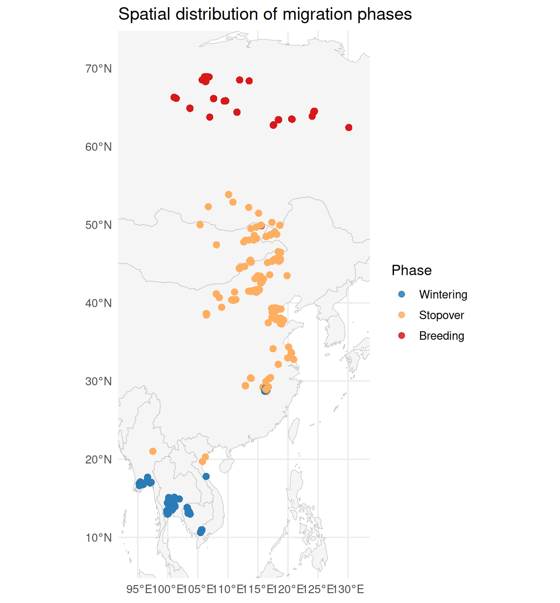

library(movepp); library(sf); library(ggplot2)
#> Linking to GEOS 3.12.1, GDAL 3.8.4, PROJ 9.4.0; sf_use_s2() is TRUE
data("godwit_demo")
godwit <- compute_step_speed(godwit_demo, time_col = "time",
individual_col = "individual", direction = "centered")
seg <- balm_segmentation(godwit, variable_col = "step_speed",
individual_col = "individual", verbose = FALSE)
stationary <- seg[!is.na(seg$cluster_type) & seg$cluster_type %in% c("LL", "LH"), ]
p <- detect_habitat_params(stationary, track = seg,
individual_col = "individual", time_col = "time")
#> eps = 0.656 km (migratory; 0.95-quantile of 2-comp GMM; flight/eps gap 306x)
#> minPts = 15 (~1.88 d min residence at 3.0 h sampling; knee)
hab <- dbscan_habitats(stationary, individual_col = "individual",
eps = p$eps, minPts = p$minPts)Overview
The meso-scale phase chain assigns each temporary habitat to a life-history phase (wintering / stopover / breeding):
-
compute_mpi()– a data-driven Migration Phase Index (MPI) in [0, 1]: nothing is hard-coded to latitude or to a fixed calendar. -
classify_phases()– finds the density valleys of the MPI distribution and cuts the MPI range at them, labelling each point by the band it falls in, then votes per habitat; phases are ordered by ascending mean MPI. -
annotate_phases()– an optional interactive gadget to manually refine the automatic result (seeded from it), per habitat.
detect_dominant_axis() is available as a stand-alone axis diagnostic.
Setup
The Migration Phase Index
MPI is the geometric mean of a spatial term and a temporal term, so a high value requires being at the breeding place AND in the breeding season – an estimate of the chance of breeding. Everything is derived from the data:
- Axis – PCA of the (lon, lat) coordinates; PC1 is the dominant migration direction (latitudinal, longitudinal or diagonal). If PC1 explains < 85% of variance, PC2 is added (three-way geometric mean).
-
Polarity & temporal anchors (population) – for each well-travelled individual the lowest / highest 10% (
q) of axis positions form two extreme fix-sets. Their pooled occupancy dates do two jobs: they decide which end is breeding (the extreme whose dates are more temporally concentrated – the short, synchronised breeding window; a poleward cross-check breaks ties), and they set the population wintering / breeding day-of-year anchors. Pooled across individuals – “time = population”. -
Spatial term (per individual) – each individual’s axis position is rescaled to [0, 1] between its near-maximal extremes (the 2nd / 98th percentiles,
anchor_q), not the 10% tails used above. The breeding extreme is a spatial limit that can be badly under-represented in time: an individual that skips breeding in some years spends most of its northern time at a lower, non-breeding settlement, which would pull a 10th/90th-percentile anchor down and clamp the true breeding extreme to 1 – making a non-breeding stop indistinguishable from real breeding. Near-maximal anchors reserveMPI = 1for the genuine extreme. “Space = individual”. - Temporal term – a triangular tent: 0 at the population wintering date, rising linearly to 1 at the breeding date, then falling back to 0, with possibly unequal spring / autumn arms. Spring and autumn map to the same value, so MPI is a direction-agnostic breeding-phase index.
winter_doy / breed_doy can be supplied to override the auto-detected anchors (e.g. tropical or photoperiod-decoupled breeders).
mpi <- compute_mpi(hab, individual_col = "individual", time_col = "time")
#> [compute_mpi] axis: PC1 = 90.7% var (unidirectional, PC1)
#> [compute_mpi] breed_doy = 168, winter_doy = 4
#> [compute_mpi] polarity: breeding = high axis end (R_breed = 0.96 vs R_winter = 0.56) [by concentration]
summary(mpi$mpi)
#> Min. 1st Qu. Median Mean 3rd Qu. Max.
#> 0.00000 0.04441 0.53754 0.43041 0.69735 0.99867
c(winter_doy = attr(mpi, "mpi_winter_doy"),
breed_doy = attr(mpi, "mpi_breed_doy"),
pc1_var = round(attr(mpi, "mpi_pc1_var"), 3))
#> winter_doy breed_doy pc1_var
#> 3.692853 168.467781 0.907000Phase classification
classify_phases() fits no distributional model and uses no prominence threshold. MPI is built so wintering piles up near 0 and breeding near 1, so on the pooled MPI density the leftmost peak is the wintering mode and the rightmost peak is the breeding mode – a structural fact of the index. The two phase boundaries are anchored to those extreme peaks: the lower cut is the first density valley to the right of the leftmost peak, and the upper cut is the last density valley to the left of the rightmost peak. Everything between is the stopover band, so any number of staging sites – however deep their internal valleys – are absorbed into stopover and can never be mistaken for a phase boundary. Each point is then labelled deterministically by the band its MPI falls in, and each habitat takes the majority phase of its points. The resolved phase count shrinks below the request only when the data structurally lack the modes (two peaks -> two phases; one mode -> one) – an objective property of the distribution, not a tuned cutoff.
phs <- classify_phases(mpi, n_phases = 3, individual_col = "individual")
#> [classify_phases] 3 phase(s); peaks {0.035, 0.635, 0.964}; cut(s) {0.220, 0.846}; sizes {19963, 18973, 8016}; mean MPI {0.042, 0.615, 0.960}
lev <- names(sort(tapply(phs$mpi, phs$phase, mean, na.rm = TRUE)))
phs$phase <- factor(phs$phase, levels = lev)
phase_pal <- c(Wintering = "#2C7BB6", Stopover = "#FDAE61", Breeding = "#D7191C")
fit_info <- attr(phs, "phase_fit")
round(fit_info$peaks, 3) # KDE peaks (leftmost = winter, rightmost = breeding)
#> [1] 0.035 0.635 0.964
round(fit_info$phase_cuts, 3) # peak-anchored cut points
#> [1] 0.220 0.846
fit_info$phase_sizes # points per phase
#> [1] 19963 18973 8016
round(fit_info$phase_mpi_mean, 3) # mean MPI per phase
#> [1] 0.042 0.615 0.960
table(phs$phase)
#>
#> Wintering Stopover Breeding
#> 19963 18971 8018MPI distribution by phase
The histogram shows the “spike-plateau-spike” MPI distribution coloured by the assigned phase, with the peak-anchored cuts (dashed) marked. The lower cut sits just right of the wintering peak, the upper cut just left of the breeding peak; because assignment is a hard cut, each colour boundary falls exactly on a dashed line.
cuts <- attr(phs, "phase_fit")$phase_cuts
cuts <- cuts[is.finite(cuts)]
hdf <- data.frame(mpi = phs$mpi, phase = phs$phase)
hdf <- hdf[!is.na(hdf$mpi), ]
ggplot(hdf, aes(x = mpi, fill = phase)) +
geom_histogram(bins = 40, colour = "white", linewidth = 0.15) +
geom_vline(xintercept = cuts, linetype = "dashed", colour = "grey30") +
scale_fill_manual(values = phase_pal, name = "Phase") +
labs(x = "Migration Phase Index (MPI)", y = "Count",
title = "MPI distribution by phase (dashed = density-valley cuts)") +
theme_minimal(base_size = 12)
Spatial layout by phase
world <- rnaturalearth::ne_countries(scale = "medium", returnclass = "sf")
bb <- sf::st_bbox(phs)
padx <- as.numeric(bb["xmax"] - bb["xmin"]) * 0.10
pady <- as.numeric(bb["ymax"] - bb["ymin"]) * 0.10
ggplot() +
geom_sf(data = world, fill = "grey96", colour = "grey75", linewidth = 0.2) +
geom_sf(data = phs, aes(colour = phase), size = 2, alpha = 0.85) +
scale_colour_manual(values = phase_pal, name = "Phase") +
coord_sf(xlim = c(bb["xmin"] - padx, bb["xmax"] + padx),
ylim = c(bb["ymin"] - pady, bb["ymax"] + pady), expand = FALSE) +
labs(title = "Spatial distribution of migration phases") +
theme_minimal(base_size = 12)
Manual refinement (optional, interactive)
annotate_phases() opens a Shiny gadget seeded with the phase classification (phase_col = "phase"): a habitat-occupancy behaviour barcode (time x habitat rank) linked to a clean coastline map. Box-select a habitat – a rank-row over a time span – on either panel and reassign its phase; the corrections come back in a phase_manual column. Because the barcode is organised by habitat, edits are made per habitat, matching the cluster-level classification, so only the few mis-classified habitats need fixing rather than annotating from scratch.
The gadget needs a per-individual habitat rank (south -> north) for the barcode y-axis:
co <- sf::st_coordinates(phs); lat <- co[, 2]
phs$cluster_rank <- NA_integer_
for (id in unique(phs$individual)) {
s <- phs$individual == id
mlat <- tapply(lat[s], phs$cluster_id[s], mean)
rk <- rank(mlat, ties.method = "first")
phs$cluster_rank[s] <- as.integer(rk[as.character(phs$cluster_id[s])])
}The call below launches the interactive gadget, so it is not run when building this vignette:
phs <- annotate_phases(phs, time_col = "time", rank_col = "cluster_rank",
individual_col = "individual", phase_col = "phase")
# refined labels are in phs$phase_manual
table(phs$phase_manual)See also
-
vignette("v03-dbscan-habitats")– upstream habitat delineation -
vignette("v06-isfi")– using phase labels for stratified site fidelity ```